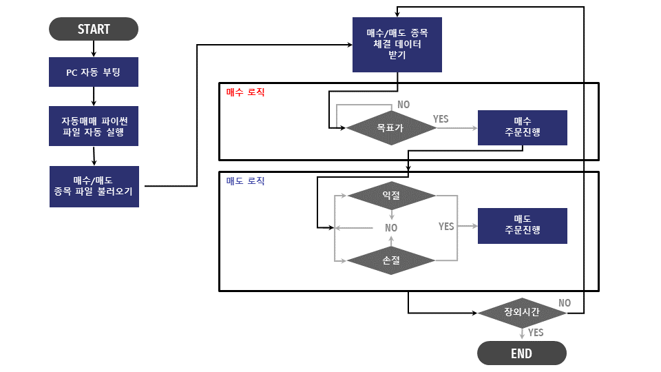

자동매매 로직 이해하기
자동매매 로직 이해하기#
자동매매 코드는 다음과 같이 크게 네 파트로 구분되어 있습니다.
장 전
필요 변수 준비
장 중
매수
매도
장 종료 전
보유 종목 중, 5th 영업일 지난 종목 일괄 매도
장 후
매수 종목 코드 및 날짜 저장 (csv 파일)
먼저 장이 시작하기 전, 필요 변수를 선언하는 코드를 살펴보겠습니다. config.yaml 파일에 저장해 두었던 개인 정보를 불러오고, get_access_token() 함수를 통해 보안인증 토큰을 생성합니다.
"""장 전, 개인 정보 준비"""
# config.yaml 파일에 저장해 두었던 개인 정보 불러오기
with open('C:/Users/kimkwa/Documents/auto/config.yaml', encoding='UTF-8') as f:
_cfg = yaml.load(f, Loader=yaml.FullLoader)
APP_KEY = _cfg['APP_KEY']
APP_SECRET = _cfg['APP_SECRET']
ACCESS_TOKEN = ""
CANO = _cfg['CANO']
ACNT_PRDT_CD = _cfg['ACNT_PRDT_CD']
DISCORD_WEBHOOK_URL = _cfg['DISCORD_WEBHOOK_URL']
URL_BASE = _cfg['URL_BASE']
# 본안인증 토큰 받기
ACCESS_TOKEN = get_access_token()
이어서 추천 종목이 들어 있는 “select_dict.pkl” 피클 파일을 불러오고, 매수 주문이 완료된 종목을 담아놓을 bought_list 변수를 선언합니다. 그다음, 잔고 조회 함수를 호출해서 보유 주식 정보를 balance_dict 변수에 저장합니다. 만약 추천종목 중에 보유 중인 종목이 있다면 매수하지 않기 위해서 bought_list 변수에 추가시키고, 추천 종목 딕셔너리 변수 selec_dict에서 해당 종목을 제외합니다.
"""장 전, 매수/매도 관련 변수 선언"""
# 추천 종목 딕셔너리 불러오기
f = open("select_dict.pkl","rb")
select_dict = pickle.load(f)
f.close()
# 매수 완료된 종목 리스트
bought_list = []
# 보유 주식 조회
balance_dict = get_stock_balance()
# 보유 중인 추천 종목을 매수 완료된 종목 리스트로 추가
for sym in select_dict.keys():
if sym in balance_dict.keys():
bought_list.append(sym)
# 보유 중인 추천 종목을 매수하지 않기 위해서 매수 딕셔너리에서 제외
for sym in bought_list:
if sym in select_dict.keys():
del select_dict[sym]
마지막으로 매수 가능한 보유 현금을 total_cash 변수에 저장하고, 매수해야 하는 종목 수를 total_buy_count에 저장합니다. 종목 당 매수 금액 비율을 산출하여 buy_percent에 저장하고, 선언된 total_cash와 buy_percent를 통해 종목별 주문 가능 금액을 buy_amount에 저장합니다.
"""장 전, 매수 금액 준비"""
# 보유 현금 조회
total_cash = get_balance()
# 매수할 종목 수
target_buy_count = len(select_dict.keys())
# 종목당 매수 금액 비율
buy_percent = 1/target_buy_count
# 종목별 주문 가능 금액 계산
buy_amount = total_cash * buy_percent
다음으로 장이 시작하는 시간과 끝나는 시간을 t_start와 t_exit에 저장합니다. 5일 이상 보유했던 종목을 장이 끝나기 5 분 전에 전량 매도하기 위해서 t_sell에 해당 시간을 저장 했습니다. 그리고 주말이면 자동매매 코드를 돌리지 않기 위해서 현재 요일 정보를 today 변수에 저장합니다.
"""장 중, 시간 변수 준비"""
while True:
t_now = datetime.datetime.now() # 현재 시간
t_start = t_now.replace(hour=9, minute=0, second=0, microsecond=0)
t_sell = t_now.replace(hour=15, minute=15, second=0, microsecond=0)
t_exit = t_now.replace(hour=15, minute=20, second=0,microsecond=0)
today = datetime.datetime.today().weekday()
if today == 5 or today == 6: # 토요일이나 일요일이면 자동 종료
send_message("주말이므로 프로그램을 종료합니다.")
break
장이 시작되고, 추천 종목 매수를 먼저 시도 합니다. 추천 종목의 현재가격이 목표가격 범위에 들어오면 매수 가능 수량을 계산하고 매수를 시도합니다. Discord 를 통해 매수 시도 알림을 보내고, 매수 성공 시, bought_list 에 해당 종목을 추가 합니다.
"""장 중, 매수"""
while True:
# 시간 변수 준비 코드 생략"
if t_start < t_now < t_sell : # AM 09:00 ~ PM 03:15
# 매수 코드
for sym, name_n_target_price_list in select_dict.items():
if len(bought_list) < target_buy_count:
if sym in bought_list:
continue
target_price = name_n_target_price_list[1] # 전날 종가
current_price = get_current_price(sym)
if target_price <= current_price < target_price * 1.05: # Max: 5% 상승 가격, Min: 전날 종가
buy_qty = 0 # 매수할 수량 초기화
buy_qty = int(buy_amount // current_price)
if buy_qty > 0:
send_message(f"{name_n_target_price_list[0]} 목표가 달성({current_price}) 매수를 시도합니다.")
result = buy(sym, buy_qty)
if result:
soldout = False
bought_list.append(sym)
get_stock_balance()
time.sleep(1)
매도 코드는 매수 코드 보다 더 간단 합니다. 계좌 잔고 조회를 통해서 보유 중인 종목의 평가수익률이 목표하는 익절 혹은 손절라인을 넘어갈 때 매도를 시도 합니다.
"""장 중, 매도"""
while True:
# 시간 변수 준비 코드 생략
if t_start < t_now < t_sell : # AM 09:00 ~ PM 03:15
# 매수 코드 생략
# 매도 코드
balance_dict = get_stock_balance()
for sym, qty_rt in balance_dict.items(): # qty_rt / [0]: qty(보유수량), [1]: rt(평가손익율)
if float(qty_rt[1]) > 5.0 or float(qty_rt[1]) < -3.0: # 익절 라인은 dynamic 하게 바꿀 수 있다
sell(sym, qty_rt[0])
time.sleep(1)
이전 장들에서 구현한 모델의 평가 기준이 5 영업일 뒤의 수익율이었기 때문에 장 종료 5분 전, 5 영업일 지난 보유 종목을 일괄 매도 합니다.
"""장 종료 5분 전, 5 영업일 지난 보유 종목 일괄 매도"""
while True:
# 시간 변수 준비 코드 생략
if t_start < t_now < t_sell : # AM 09:00 ~ PM 03:15
# 매수 코드 생략
# 매도 코드 생략
if t_sell < t_now < t_exit: # PM 03:15 ~ PM 03:20 : 5 영업일 지난 종목들 일괄 매도
send_message(f"5일된 종목을 전량 매도 합니다.")
sell_list_5d_over = get_stock_5d_before()
balance_dict = get_stock_balance()
for sym, qty_rt in balance_dict.items():
if sym in sell_list_5d_over:
sell(sym, qty_rt[0])
time.sleep(1)
장 후, 프로그램을 종료합니다.
"""장 후, 프로그램 종료"""
while True:
# 시간 변수 준비 코드 생략
if t_start < t_now < t_sell : # AM 09:00 ~ PM 03:15
# 매수 코드 생략
# 매도 코드 생략
if t_sell < t_now < t_exit: # PM 03:15 ~ PM 03:20
# 5 영업일 지난 종목들 일괄 매도
if t_exit < t_now: # PM 03:20 ~ :프로그램 종료
print("프로그램을 종료합니다.")
break
전체 코드의 로직을 볼 수 잇는 플로우 차트는 아래와 같습니다.

Jupyter 환경에서 ipynb 파일로 전체 코드를 아래와 같이 순서대로 실행해 볼 수 있습니다.
f = open("select_dict.pkl","rb")
select_dict = pickle.load(f)
f.close()
select_dict
import requests
import json
import datetime
import time
import yaml
import pickle
import pandas as pd
from pathlib import Path
from os import path
with open('C:/Users/kimkwa/Documents/auto/config.yaml', encoding='UTF-8') as f:
_cfg = yaml.load(f, Loader=yaml.FullLoader)
APP_KEY = _cfg['APP_KEY']
APP_SECRET = _cfg['APP_SECRET']
ACCESS_TOKEN = ""
CANO = _cfg['CANO']
ACNT_PRDT_CD = _cfg['ACNT_PRDT_CD']
DISCORD_WEBHOOK_URL = _cfg['DISCORD_WEBHOOK_URL']
URL_BASE = _cfg['URL_BASE']
f = open("select_dict.pkl","rb")
select_dict = pickle.load(f)
f.close()
# Input Dict 로 엑셀 파일 만들기
def send_message(msg):
"""디스코드 메세지 전송"""
now = datetime.datetime.now()
message = {"content": f"[{now.strftime('%Y-%m-%d %H:%M:%S')}] {str(msg)}"}
requests.post(DISCORD_WEBHOOK_URL, data=message)
print(message)
def get_access_token():
"""토큰 발급"""
headers = {"content-type":"application/json"}
body = {"grant_type":"client_credentials",
"appkey":APP_KEY,
"appsecret":APP_SECRET}
PATH = "oauth2/tokenP"
URL = f"{URL_BASE}/{PATH}"
res = requests.post(URL, headers=headers, data=json.dumps(body))
ACCESS_TOKEN = res.json()["access_token"]
return ACCESS_TOKEN
def hashkey(datas):
"""암호화"""
PATH = "uapi/hashkey"
URL = f"{URL_BASE}/{PATH}"
headers = {
'content-Type' : 'application/json',
'appKey' : APP_KEY,
'appSecret' : APP_SECRET,
}
res = requests.post(URL, headers=headers, data=json.dumps(datas))
hashkey = res.json()["HASH"]
return hashkey
def get_current_price(code="005930"):
"""현재가 조회"""
PATH = "uapi/domestic-stock/v1/quotations/inquire-price"
URL = f"{URL_BASE}/{PATH}"
headers = {"Content-Type":"application/json",
"authorization": f"Bearer {ACCESS_TOKEN}",
"appKey":APP_KEY,
"appSecret":APP_SECRET,
"tr_id":"FHKST01010100"}
params = {
"fid_cond_mrkt_div_code":"J",
"fid_input_iscd":code,
}
res = requests.get(URL, headers=headers, params=params)
return int(res.json()['output']['stck_prpr'])
def get_stock_5d_before():
def get_stock_before(date):
PATH = "uapi/domestic-stock/v1/trading/inquire-daily-ccld"
URL = f"{URL_BASE}/{PATH}"
headers = {"Content-Type":"application/json",
"authorization":f"Bearer {ACCESS_TOKEN}",
"appKey":APP_KEY,
"appSecret":APP_SECRET,
"tr_id":"VTTC8001R", # 실전 투자 "TTTC8001R"
"custtype":"P",
}
params = {
"CANO": CANO,
"ACNT_PRDT_CD": ACNT_PRDT_CD,
"INQR_STRT_DT": date,
"INQR_END_DT": date,
"SLL_BUY_DVSN_CD": "02", # 00:전체, 01:매도, 02:매수
"INQR_DVSN": "01", # 00: 역순
"PDNO": "",
"CCLD_DVSN": "01",
"ORD_GNO_BRNO":"",
"ODNO":"",
"INQR_DVSN_3": "01",
"INQR_DVSN_1": "",
"CTX_AREA_FK100": "",
"CTX_AREA_NK100": ""
}
res = requests.get(URL, headers=headers, params=params)
stock_dict = res.json()['output1']
return stock_dict
prev = 7
while prev < 15:
t_previous_5d = datetime.datetime.now().date() - datetime.timedelta(days=prev)
t_previous_5d = t_previous_5d.strftime("%Y%m%d")
bought_previous_5d_dict = get_stock_before(t_previous_5d)
if len(bought_previous_5d_dict) > 0:
break
else:
prev += 1
sell_list_5d_over = []
for stock in bought_previous_5d_dict:
sell_list_5d_over.append(stock['pdno'])
sell_list_5d_over = list(set(sell_list_5d_over))
return sell_list_5d_over
def get_stock_balance():
"""주식 잔고조회"""
PATH = "uapi/domestic-stock/v1/trading/inquire-balance"
URL = f"{URL_BASE}/{PATH}"
headers = {"Content-Type":"application/json",
"authorization":f"Bearer {ACCESS_TOKEN}",
"appKey":APP_KEY,
"appSecret":APP_SECRET,
"tr_id":"VTTC8434R", # 실전 투자 "TTTC8434R"
"custtype":"P",
}
params = {
"CANO": CANO,
"ACNT_PRDT_CD": ACNT_PRDT_CD,
"AFHR_FLPR_YN": "N",
"OFL_YN": "",
"INQR_DVSN": "02",
"UNPR_DVSN": "01",
"FUND_STTL_ICLD_YN": "N",
"FNCG_AMT_AUTO_RDPT_YN": "N",
"PRCS_DVSN": "01",
"CTX_AREA_FK100": "",
"CTX_AREA_NK100": ""
}
res = requests.get(URL, headers=headers, params=params)
stock_list = res.json()['output1']
evaluation = res.json()['output2']
stock_dict = {}
send_message(f"====주식 보유잔고====")
for stock in stock_list:
if int(stock['hldg_qty']) > 0:
stock_dict[stock['pdno']] = [stock['hldg_qty'], stock['evlu_pfls_rt']] # 0: 보유 수량, 1: 평가손익율
send_message(f"{stock['prdt_name']}({stock['pdno']}): {stock['hldg_qty']}주 {stock['evlu_pfls_rt']}")
time.sleep(0.1)
send_message(f"주식 평가 금액: {evaluation[0]['scts_evlu_amt']}원")
time.sleep(0.1)
send_message(f"평가 손익 합계: {evaluation[0]['evlu_pfls_smtl_amt']}원")
time.sleep(0.1)
send_message(f"총 평가 금액: {evaluation[0]['tot_evlu_amt']}원")
time.sleep(0.1)
send_message(f"=================")
return stock_dict
def get_balance():
"""현금 잔고조회"""
PATH = "uapi/domestic-stock/v1/trading/inquire-psbl-order"
URL = f"{URL_BASE}/{PATH}"
headers = {"Content-Type":"application/json",
"authorization":f"Bearer {ACCESS_TOKEN}",
"appKey":APP_KEY,
"appSecret":APP_SECRET,
"tr_id":"VTTC8908R", # 실전 투자 : "TTTC8908R"
"custtype":"P",
}
params = {
"CANO": CANO,
"ACNT_PRDT_CD": ACNT_PRDT_CD,
"PDNO": "005930",
"ORD_UNPR": "65500",
"ORD_DVSN": "01",
"CMA_EVLU_AMT_ICLD_YN": "Y",
"OVRS_ICLD_YN": "Y"
}
res = requests.get(URL, headers=headers, params=params)
cash = res.json()['output']['ord_psbl_cash']
send_message(f"주문 가능 현금 잔고: {cash}원")
return int(cash)
def buy(code="005930", qty="1"):
"""주식 시장가 매수"""
PATH = "uapi/domestic-stock/v1/trading/order-cash"
URL = f"{URL_BASE}/{PATH}"
data = {
"CANO": CANO,
"ACNT_PRDT_CD": ACNT_PRDT_CD,
"PDNO": code,
"ORD_DVSN": "01",
"ORD_QTY": str(int(qty)),
"ORD_UNPR": "0",
}
headers = {"Content-Type":"application/json",
"authorization":f"Bearer {ACCESS_TOKEN}",
"appKey":APP_KEY,
"appSecret":APP_SECRET,
"tr_id":"VTTC0802U", # 실전 투자 : "TTTC0802U"
"custtype":"P",
"hashkey" : hashkey(data)
}
res = requests.post(URL, headers=headers, data=json.dumps(data))
if res.json()['rt_cd'] == '0':
send_message(f"[매수 성공]{str(res.json())}")
return True
else:
send_message(f"[매수 실패]{str(res.json())}")
return False
def sell(code="005930", qty="1"):
"""주식 시장가 매도"""
PATH = "uapi/domestic-stock/v1/trading/order-cash"
URL = f"{URL_BASE}/{PATH}"
data = {
"CANO": CANO,
"ACNT_PRDT_CD": ACNT_PRDT_CD,
"PDNO": code,
"ORD_DVSN": "01",
"ORD_QTY": qty,
"ORD_UNPR": "0",
}
headers = {"Content-Type":"application/json",
"authorization":f"Bearer {ACCESS_TOKEN}",
"appKey":APP_KEY,
"appSecret":APP_SECRET,
"tr_id":"VTTC0801U", # 실전 투자 : TTTC0801U
"custtype":"P",
"hashkey" : hashkey(data)
}
res = requests.post(URL, headers=headers, data=json.dumps(data))
if res.json()['rt_cd'] == '0':
send_message(f"[매도 성공]{str(res.json())}")
return True
else:
send_message(f"[매도 실패]{str(res.json())}")
return False
# 자동매매 시작
try:
ACCESS_TOKEN = get_access_token()
bought_list = [] # 매수 완료된 종목 리스트
balance_dict = get_stock_balance() # 보유 주식 조회
for sym in select_dict.keys():
if sym in balance_dict.keys():
bought_list.append(sym)
for sym in bought_list:
if sym in select_dict.keys():
del select_dict[sym]
total_cash = get_balance() # 보유 현금 조회
target_buy_count = len(select_dict.keys()) # 매수할 종목 수
buy_percent = 1/target_buy_count # 종목당 매수 금액 비율
buy_amount = total_cash * buy_percent # 종목별 주문 금액 계산
send_message("===국내 주식 자동매매 프로그램을 시작합니다===")
while True:
t_now = datetime.datetime.now()
t_start = t_now.replace(hour=8, minute=59, second=59, microsecond=0)
t_sell = t_now.replace(hour=15, minute=15, second=0, microsecond=0)
t_exit = t_now.replace(hour=15, minute=20, second=0,microsecond=0)
today = datetime.datetime.today().weekday()
if today == 5 or today == 6: # 토요일이나 일요일이면 자동 종료
send_message("주말이므로 프로그램을 종료합니다.")
break
if t_start < t_now < t_exit : # AM 09:00 ~ PM 03:15
# 매수 코드
for sym, name_n_target_price_list in select_dict.items():
if len(bought_list) < target_buy_count:
if sym in bought_list:
continue
target_price = name_n_target_price_list[1] # 전날 종가
current_price = get_current_price(sym)
if target_price <= current_price < target_price * 1.05: # Max: 5% 상승 가격, Min: 전날 종가
buy_qty = 0 # 매수할 수량 초기화
buy_qty = int(buy_amount // current_price)
if buy_qty > 0:
send_message(f"{name_n_target_price_list[0]} 목표가 달성({current_price}) 매수를 시도합니다.")
result = buy(sym, buy_qty)
if result:
soldout = False
bought_list.append(sym)
get_stock_balance()
time.sleep(1)
# 매도 코드
balance_dict = get_stock_balance()
for sym, qty_rt in balance_dict.items(): # qty_rt / [0]: qty(보유수량), [1]: rt(평가손익율)
if float(qty_rt[1]) > 5.0 or float(qty_rt[1]) < -3.0: # 익절 라인은 dynamic 하게 바꿀 수 있다
sell(sym, qty_rt[0])
time.sleep(1)
if t_sell < t_now < t_exit: # PM 03:15 ~ PM 03:20 : 5th Day 를 맞이한 종목들 일괄 매도
sell_list_5d_over = get_stock_5d_before()
balance_dict = get_stock_balance()
for sym, qty_rt in balance_dict.items():
if sym in sell_list_5d_over:
send_message(f"5일된 종목 {sym}을 전량 매도 합니다.")
sell(sym, qty_rt[0])
time.sleep(1)
if t_exit < t_now: # PM 03:20 ~ :프로그램 종료
send_message("프로그램을 종료합니다.")
break
except Exception as e:
send_message(f"[오류 발생]{e}")
time.sleep(1)